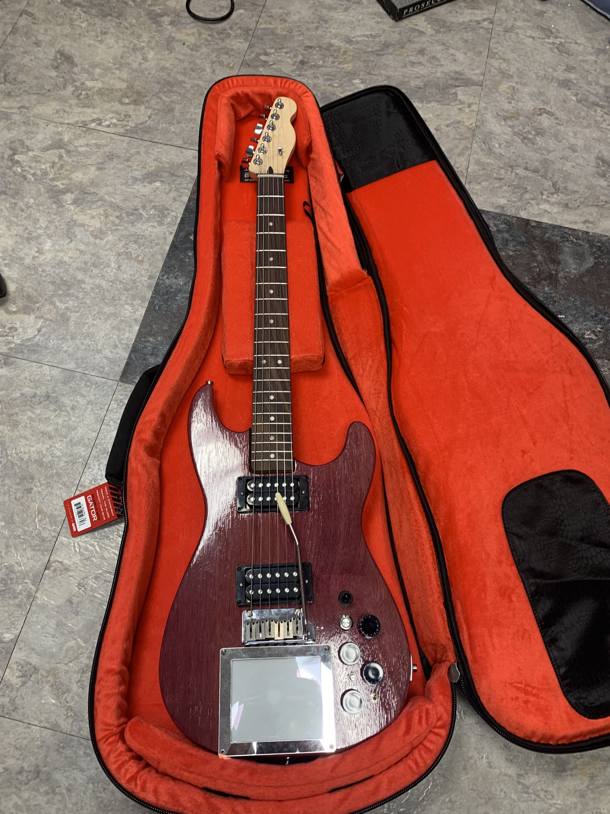
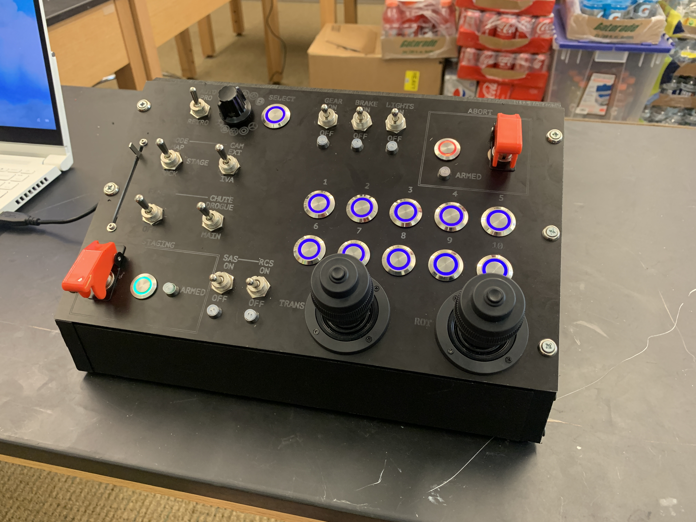

Electric Guitar
I modelled, laser-cut, and assembled this custom electric guitar out of sheets of purpleheart and red cedar wood. It was a really interesting challenge and was one of my first experiences with CAD/CAM beyond simple 3D printing. In addition to custom standard guitar electronics, it has a MIDI touchpad in the body of the guitar that can connect to an effects controller, allowing for precision control of various sound effects like high/low pass filters and overdrive.


Custom Flight Sim Controller
In high school I designed, machined, and wired a custom game controller for the spaceflight simulator Kerbal Space Program, using an Arduino to handle digital and analog inputs. Reactive LEDs respond to actions taken to provide user feedback while playing. I machined the top plate out of anodized aluminum and laser engraved it in a style that mimicked Apollo-era NASA control panels.